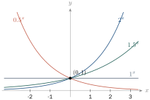
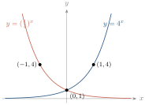
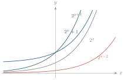
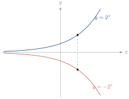

- សង់ក្រាបនៃអនុគមន៍អិចស្ប៉ូណង់ស្យែល
- ដោះស្រាយសមីការនិងវិសមីការអិចស្ប៉ូណង់ស្យែល ។
1. អនុគមន៍អិចស្ប៉ូណង់ស្យែល
1.1. និយមន័យ
ឧទាហរណ៍ : \(\displaystyle 3^x\) និង \(\displaystyle \left(\dfrac13\right)^{2x+1}\) ជាអិចស្ប៉ូណង់ស្យែល ព្រោះមាននិទស្សន្តជាអថេរ និងគោលជាចំនួនវិជ្ជមានខុសពី \(\displaystyle 1\) ។ រីឯ \(\displaystyle (-3)^x\), \(\displaystyle 1^x\), \(\displaystyle 0^x\) មិនមែនជាអិចស្ប៉ូណង់ស្យែលទេ ។
អនុគមន៍អិចស្ប៉ូណង់ស្យែលគឺជាអនុគមន៍ស្វ័យគុណដែលមានអថេរឯករាជ្យជានិទស្សន្ត និងមានគោលជាចំនួនវិជ្ជមានខុសពី \(\displaystyle 1\) ។ ឧទាហរណ៍ \(\displaystyle f(x) = 3^x\) និង \(\displaystyle f(x) = 3^{-x+1}\) ។
1.2. ក្រាបនៃអនុគមន៍អិចស្ប៉ូណង់ស្យែល
ឧទាហរណ៍ : សង់ក្រាបនៃ \(\displaystyle f(x) = 2^x\), \(\displaystyle g(x) = (1.5)^x\), \(\displaystyle h(x) = 1^x\), \(\displaystyle k(x) = (0.5)^x\) ក្នុងតម្រុយតែមួយ ។
| \(\displaystyle x\) | \(\displaystyle -2\) | \(\displaystyle -1\) | \(\displaystyle 0\) | \(\displaystyle 1\) | \(\displaystyle 2\) |
| \(\displaystyle y = 1.5^x\) | \(\displaystyle 0.44\) | \(\displaystyle 0.67\) | \(\displaystyle 1\) | \(\displaystyle 1.5\) | \(\displaystyle 2.25\) |

គ្រប់ក្រាបនៃ \(\displaystyle y = a^x\) កាត់តាមចំណុច \(\displaystyle (0, 1)\) ជានិច្ច ។
- បើ \(\displaystyle x > 0\) នោះ \(\displaystyle (1.5)^x < 2^x\) ដូច្នេះក្រាប \(\displaystyle g\) នៅក្រោមក្រាប \(\displaystyle f\) ក្នុងកាដ្រង់ទី \(\displaystyle 1\) ។
- \(\displaystyle h(x) = 1^x\) មានក្រាបជាបន្ទាត់ស្របអ័ក្សអាប់ស៊ីស នៅលើអ័ក្សចម្ងាយ \(\displaystyle 1\) ឯកតា ។
- បើ \(\displaystyle x\) កើនធំឡើង នោះ \(\displaystyle k(x) = (0.5)^x\) ចុះតូចទៅៗខិតទៅរក \(\displaystyle 0\) ។ បើ \(\displaystyle x < 0\) នោះ \(\displaystyle (0.5)^x\) ធំឡើងគ្មានកំណត់ ។
អនុគមន៍ \(\displaystyle y = a^x\) មានលក្ខណៈ ៖
- បើ \(\displaystyle a > 1\) ក្រាបកើនពីឆ្វេងទៅស្តាំ (អនុគមន៍កើន)
- បើ \(\displaystyle 0 < a < 1\) ក្រាបចុះពីឆ្វេងទៅស្តាំ (អនុគមន៍ចុះ)
- \(\displaystyle a^x > 0\) គ្រប់ \(\displaystyle x \in \mathbb{R}\)
- ក្រាបកាត់អ័ក្សអរដោនេត្រង់ \(\displaystyle (0, 1)\) ជានិច្ច ។
សង់ក្រាប ក. \(\displaystyle y = 4^x\) ខ. \(\displaystyle y = \left(\dfrac14\right)^x\) ។
| \(\displaystyle x\) | \(\displaystyle -2\) | \(\displaystyle -1\) | \(\displaystyle 0\) | \(\displaystyle 1\) | \(\displaystyle 2\) |
| \(\displaystyle y = 4^x\) | \(\displaystyle \frac{1}{16}\) | \(\displaystyle \frac14\) | \(\displaystyle 1\) | \(\displaystyle 4\) | \(\displaystyle 16\) |
| \(\displaystyle y = (1/4)^x\) | \(\displaystyle 16\) | \(\displaystyle 4\) | \(\displaystyle 1\) | \(\displaystyle \frac14\) | \(\displaystyle \frac{1}{16}\) |

សង់ក្រាប ក. \(\displaystyle y = 10^x\) ខ. \(\displaystyle y = \left(\dfrac1{10}\right)^x\) ។
1.3. ការរំកិល និងការឆ្លុះក្រាប
ឧទាហរណ៍ : ពីក្រាប \(\displaystyle y = 2^x\) គេបានក្រាបផ្សេងទៀតដោយរំកិល ឬឆ្លុះ ៖
| \(\displaystyle x\) | \(\displaystyle -2\) | \(\displaystyle -1\) | \(\displaystyle 0\) | \(\displaystyle 1\) | \(\displaystyle 2\) |
| \(\displaystyle 2^x\) | \(\displaystyle \frac14\) | \(\displaystyle \frac12\) | \(\displaystyle 1\) | \(\displaystyle 2\) | \(\displaystyle 4\) |
| \(\displaystyle 2^x + 1\) | \(\displaystyle \frac54\) | \(\displaystyle \frac32\) | \(\displaystyle 2\) | \(\displaystyle 3\) | \(\displaystyle 5\) |
| \(\displaystyle 2^{x+1}\) | \(\displaystyle \frac12\) | \(\displaystyle 1\) | \(\displaystyle 2\) | \(\displaystyle 4\) | \(\displaystyle 8\) |
| \(\displaystyle 2^{x-2}\) | \(\displaystyle \frac{1}{16}\) | \(\displaystyle \frac18\) | \(\displaystyle \frac14\) | \(\displaystyle \frac12\) | \(\displaystyle 1\) |
| \(\displaystyle -2^x\) | \(\displaystyle -\frac14\) | \(\displaystyle -\frac12\) | \(\displaystyle -1\) | \(\displaystyle -2\) | \(\displaystyle -4\) |


- \(\displaystyle y = a^x + q\) ៖ រំកិលក្រាប \(\displaystyle y = a^x\) ស្របអ័ក្ស \(\displaystyle (Oy)\) ចំនួន \(\displaystyle q\) ឯកតា ឡើងលើបើ \(\displaystyle q > 0\) ចុះក្រោមបើ \(\displaystyle q < 0\) ។
- \(\displaystyle y = a^{x-p}\) ៖ រំកិលស្របអ័ក្ស \(\displaystyle (Ox)\) ចំនួន \(\displaystyle p\) ឯកតា ទៅស្តាំបើ \(\displaystyle p > 0\) ទៅឆ្វេងបើ \(\displaystyle p < 0\) ។
- \(\displaystyle y = -a^x\) ៖ ឆ្លុះក្រាប \(\displaystyle y = a^x\) ធៀបនឹងអ័ក្ស \(\displaystyle (Ox)\) ។
សង់ក្រាប ក. \(\displaystyle y = 3^x - 3\) ខ. \(\displaystyle y = 3^x + 1\) គ. \(\displaystyle y = (1.5)^{x-2}\) ឃ. \(\displaystyle y = (1.5)^{x+3}\) ង. \(\displaystyle y = -5^x\) ។
2. សមីការនិងវិសមីការអិចស្ប៉ូណង់ស្យែល
2.1. សមីការអិចស្ប៉ូណង់ស្យែល
សមីការអិចស្ប៉ូណង់ស្យែលគឺជាសមីការស្វ័យគុណដែលមាននិទស្សន្តជាអញ្ញាត និងមានគោលជាចំនួនវិជ្ជមានខុសពី \(\displaystyle 1\) ។ ឧទាហរណ៍ \(\displaystyle 3^x = 2187\) ។
វិធី ដាក់អង្គទាំងពីរក្នុងគោលដូចគ្នា \(\displaystyle a^u = a^v\) នោះ \(\displaystyle u = v\) ។
ដោះស្រាយសមីការ ៖
- ក. \(\displaystyle 2^{3x+5} = 128\) ខ. \(\displaystyle 5^{x-3} = \dfrac{1}{25}\) គ. \(\displaystyle \left(\dfrac19\right)^x = 81^{x+4}\)
- ឃ. \(\displaystyle 49^x = 7^{x^2-15}\) ង. \(\displaystyle 36^{2x} = 216^{x-1}\) ច. \(\displaystyle 10^{x-1} = 100^{2x-3}\)
- ក. \(\displaystyle 2^{3x+5} = 2^7\) នាំឱ្យ \(\displaystyle 3x + 5 = 7\) ហើយ \(\displaystyle x = \dfrac23\)
- ខ. \(\displaystyle 5^{x-3} = 5^{-2}\) នាំឱ្យ \(\displaystyle x = 1\)
- គ. \(\displaystyle 9^{-x} = 9^{2(x+4)}\) នាំឱ្យ \(\displaystyle -x = 2x + 8\) ហើយ \(\displaystyle x = -\dfrac83\)
- ឃ. \(\displaystyle 7^{2x} = 7^{x^2-15}\) នាំឱ្យ \(\displaystyle x^2 - 2x - 15 = 0\) ហើយ \(\displaystyle x = 5\) ឬ \(\displaystyle x = -3\)
- ង. \(\displaystyle 6^{4x} = 6^{3(x-1)}\) នាំឱ្យ \(\displaystyle 4x = 3x - 3\) ហើយ \(\displaystyle x = -3\)
- ច. \(\displaystyle 10^{x-1} = 10^{2(2x-3)}\) នាំឱ្យ \(\displaystyle x - 1 = 4x - 6\) ហើយ \(\displaystyle x = \dfrac53\)
ដោះស្រាយសមីការ ៖
- ក. \(\displaystyle 5^x \cdot 2^{\frac{2x-1}{x+1}} = 50\) ខ. \(\displaystyle 3^{4x+8} - 4 \cdot 3^{2x+5} + 27 = 0\)
- គ. \(\displaystyle 27^x + 12^x = 2 \cdot 8^x\) ឃ. \(\displaystyle 3^{2x^2-6x+3} + 6^{x^2-3x+1} = 2^{2x^2-6x+3}\)
មើលចម្លើយ
- ក. \(\displaystyle x = 2\) ឬ \(\displaystyle x = -1 - \log_5 2\)
- ខ. \(\displaystyle x = -1\) ឬ \(\displaystyle x = -\dfrac32\) (តាង \(\displaystyle u = 3^{2x+4}\) គេបាន \(\displaystyle u^2 - 12u + 27 = 0\))
- គ. \(\displaystyle x = 0\) (ចែកនឹង \(\displaystyle 8^x\) តាង \(\displaystyle t = (3/2)^x\) គេបាន \(\displaystyle t^3 + t - 2 = 0\))
- ឃ. \(\displaystyle x = 1\) ឬ \(\displaystyle x = 2\) (តាង \(\displaystyle m = x^2 - 3x + 1\) ចែកនឹង \(\displaystyle 4^m\) តាង \(\displaystyle t = (3/2)^m\) គេបាន \(\displaystyle 3t^2 + t - 2 = 0\))
2.2. វិសមីការអិចស្ប៉ូណង់ស្យែល
ឧទាហរណ៍ : \(\displaystyle 2^x < 2^3\) គេបាន \(\displaystyle x < 3\) ។ ប៉ុន្តែ \(\displaystyle \left(\dfrac12\right)^x < \left(\dfrac12\right)^3\) គេបាន \(\displaystyle x > 3\) ។
- បើ \(\displaystyle a > 1\) នោះ \(\displaystyle a^x > a^y \iff x > y\) និង \(\displaystyle a^x < a^y \iff x < y\) ។
- បើ \(\displaystyle 0 < a < 1\) នោះ \(\displaystyle a^x > a^y \iff x < y\) និង \(\displaystyle a^x < a^y \iff x > y\) (ប្តូរទិសវិសមភាព) ។
ដោះស្រាយវិសមីការ ៖
- ក. \(\displaystyle 25^{2x} \le 5\sqrt5\) ខ. \(\displaystyle \left(\dfrac23\right)^{-3x} > \dfrac{16}{81}\) គ. \(\displaystyle 5^x > -7\) ឃ. \(\displaystyle (0.1)^x > 10\)
- ង. \(\displaystyle 27^x \cdot 3^{1-x} < \dfrac13\) ច. \(\displaystyle 2^{9x-x^3} < 1\) ឆ. \(\displaystyle \left(\dfrac13\right)^{\frac2x} + 3\left(\dfrac13\right)^{\frac1x+1} > 12\)
- ក. \(\displaystyle 5^{4x} \le 5^{3/2}\) នាំឱ្យ \(\displaystyle x \le \dfrac38\)
- ខ. \(\displaystyle \left(\dfrac23\right)^{-3x} > \left(\dfrac23\right)^4\) ដោយគោល \(\displaystyle < 1\) គេបាន \(\displaystyle -3x < 4\) ហើយ \(\displaystyle x > -\dfrac43\)
- គ. \(\displaystyle 5^x > 0 > -7\) ដូច្នេះចម្លើយគឺ \(\displaystyle x \in \mathbb{R}\)
- ឃ. \(\displaystyle 10^{-x} > 10^1\) នាំឱ្យ \(\displaystyle -x > 1\) ហើយ \(\displaystyle x < -1\)
- ង. \(\displaystyle 3^{2x+1} < 3^{-1}\) នាំឱ្យ \(\displaystyle x < -1\)
- ច. \(\displaystyle 9x - x^3 < 0 \iff x(3-x)(3+x) < 0\) ដូច្នេះ \(\displaystyle -3 < x < 0\) ឬ \(\displaystyle x > 3\)
- ឆ. តាង \(\displaystyle t = \left(\dfrac13\right)^{1/x} > 0\) គេបាន \(\displaystyle t^2 + t - 12 > 0\) ហើយ \(\displaystyle t > 3\) ។ ដោយ \(\displaystyle \left(\dfrac13\right)^{1/x} > \left(\dfrac13\right)^{-1}\) គេបាន \(\displaystyle \dfrac1x < -1\) ពោលគឺ \(\displaystyle -1 < x < 0\)
ដោះស្រាយវិសមីការ ៖
- ក. \(\displaystyle 7^{3x+1} > 49\) ខ. \(\displaystyle \left(\dfrac15\right)^x < \sqrt[3]{0.04}\) គ. \(\displaystyle 3^x < \dfrac{1}{9\sqrt3}\)
- ឃ. \(\displaystyle 3^x \le -3\) ង. \(\displaystyle (0.2)^x > 25\) ច. \(\displaystyle (0.1)^{4x^2-2x-2} < (0.1)^{2x-3}\)
មើលចម្លើយ
- ក. \(\displaystyle x > \dfrac13\) ខ. \(\displaystyle x > \dfrac23\) គ. \(\displaystyle x < -\dfrac52\)
- ឃ. គ្មានចម្លើយ ង. \(\displaystyle x < -2\) ច. \(\displaystyle x \in \mathbb{R} \setminus \left\{\dfrac12\right\}\)
3. ការអនុវត្តអនុគមន៍អិចស្ប៉ូណង់ស្យែល
ឧទាហរណ៍ : ពូសុខទិញប័ណ្ណសន្សំប្រាក់ \(\displaystyle 50\,000\) រៀល អត្រាការប្រាក់ \(\displaystyle 6\%\) ក្នុងមួយឆ្នាំ ។ ទុក \(\displaystyle 3\) ឆ្នាំ តើមានប្រាក់សរុបប៉ុន្មាន ?
- ឆ្នាំទី \(\displaystyle 1\) ៖ \(\displaystyle 50\,000 + 3\,000 = 53\,000\) រៀល
- ឆ្នាំទី \(\displaystyle 2\) ៖ \(\displaystyle 53\,000 + 3\,180 = 56\,180\) រៀល
- ឆ្នាំទី \(\displaystyle 3\) ៖ \(\displaystyle 56\,180 + 3\,370.8 = 59\,550.8\) រៀល
បើ \(\displaystyle P\) ជាប្រាក់ដើម \(\displaystyle i\) ជាអត្រាប្រចាំឆ្នាំ នោះប្រាក់សរុបឆ្នាំទី \(\displaystyle t\) គឺ \(\displaystyle P(1+i)^t\) ។
ការប្រាក់ទូទាត់ម្តងក្នុងមួយឆ្នាំ ៖ \(\displaystyle A = P(1+i)^t\) ។ បើទូទាត់ \(\displaystyle n\) ដងក្នុងមួយឆ្នាំ ៖
ដីថ្លៃ \(\displaystyle 84\,000\) ដុល្លារ ក្នុងឆ្នាំ \(\displaystyle 1987\) លក់បាន \(\displaystyle 49\) លានដុល្លារ ក្នុងឆ្នាំ \(\displaystyle 2007\) ។ រកអត្រាចំណេញប្រចាំឆ្នាំ ។
\(\displaystyle 84\,000(1+i)^{20} = 49\,000\,000\) នាំឱ្យ \(\displaystyle (1+i)^{20} = \dfrac{49\,000}{84}\) ហើយ \(\displaystyle 1 + i \approx 1.375\) ។ ដូច្នេះ \(\displaystyle i \approx 37.5\%\) ក្នុងមួយឆ្នាំ ។
នៅឆ្នាំ \(\displaystyle 1996\) មានសិស្សជាប់ \(\displaystyle 3\,405\) នាក់ ហើយកើន \(\displaystyle 30\%\) រៀងរាល់ឆ្នាំ ។ ក. សរសេរសមីការ ខ. រកចំនួនក្នុងឆ្នាំ \(\displaystyle 2006\) ។
ក. \(\displaystyle y = 3\,405(1.30)^t\) ខ. \(\displaystyle t = 10\) គេបាន \(\displaystyle y = 3\,405(1.30)^{10} \approx 46\,941\) នាក់ ។
ត្រាក់ទ័រតម្លៃ \(\displaystyle 50\,000\) ដុល្លារ ចុះថ្លៃ \(\displaystyle 10\%\) រៀងរាល់ឆ្នាំ ។ រកតម្លៃក្រោយ \(\displaystyle 7\) ឆ្នាំ ។
\(\displaystyle y = C(1-r)^t = 50\,000(0.90)^7 \approx 23\,914.85\) ដុល្លារ ។
- ក. ដាក់ប្រាក់ ការប្រាក់ \(\displaystyle 9\%\) ក្នុងមួយឆ្នាំ ក្រោយ \(\displaystyle 5\) ឆ្នាំមាន \(\displaystyle 1\,000\) ដុល្លារ ។ រកប្រាក់ដើម ។
- ខ. ដាក់ \(\displaystyle 1\,000\) ដុល្លារ ការប្រាក់ \(\displaystyle 12\%\) ក្នុងមួយឆ្នាំ ពីអាយុ \(\displaystyle 20\) ដល់ \(\displaystyle 60\) ឆ្នាំ ។ រកប្រាក់សរុប ។
- គ. រថយន្ត \(\displaystyle 39\,000\) ដុល្លារ ចុះថ្លៃ \(\displaystyle 14\%\) ក្នុងមួយឆ្នាំ ។ រកតម្លៃក្រោយ \(\displaystyle 10\) ឆ្នាំ ។
មើលចម្លើយ
- ក. \(\displaystyle P = \dfrac{1000}{(1.09)^5} \approx 649.93\) ដុល្លារ
- ខ. \(\displaystyle 1000(1.12)^{40} \approx 93\,050.97\) ដុល្លារ
- គ. \(\displaystyle 39\,000(0.86)^{10} \approx 8\,630.76\) ដុល្លារ
លំហាត់
- គណនា ៖ ក. \(\displaystyle \sqrt{16}\) ខ. \(\displaystyle \sqrt{225}\) គ. \(\displaystyle \sqrt{144}\) ឃ. \(\displaystyle \sqrt[3]{0.008(y-2)^3}\) ង. \(\displaystyle \sqrt{(-6x)^2}\) ច. \(\displaystyle \sqrt[3]{27}\) ឆ. \(\displaystyle -\sqrt[3]{64}\) ជ. \(\displaystyle \sqrt[3]{-64x^3}\)
- សរសេរជាទម្រង់និទស្សន្ត ៖ ក. \(\displaystyle x = \sqrt[4]{10}\) ខ. \(\displaystyle \sqrt[8]{56} = k\) គ. \(\displaystyle a = \sqrt[28]{500h}\) ឃ. \(\displaystyle b = \sqrt[x]{y}\)
- សម្រួល ៖ ក. \(\displaystyle \sqrt[4]{625}\) ខ. \(\displaystyle \sqrt[5]{-1}\) គ. \(\displaystyle -\sqrt[5]{-32}\) ឃ. \(\displaystyle 5\sqrt[5]{-\frac1{32}}\) ង. \(\displaystyle \sqrt[6]{x^6}\) ច. \(\displaystyle \sqrt[4]{(7b)^4}\) ឆ. \(\displaystyle \sqrt[7]{y^7}\)
- រកដែនកំណត់ ៖ ក. \(\displaystyle \sqrt{x}\) ខ. \(\displaystyle \sqrt[3]{x}\) គ. \(\displaystyle \sqrt{2x+8}\) ឃ. \(\displaystyle \sqrt{4-3x}\) ង. \(\displaystyle \sqrt{-3x^2}\) ច. \(\displaystyle \sqrt{x^2+1}\) ឆ. \(\displaystyle \dfrac{\sqrt{x}}{2x^2-3x-5}\) ជ. \(\displaystyle \dfrac{\sqrt{x+3}}{x^2-x-2}\) ឈ. \(\displaystyle \dfrac{\sqrt{x+1}}{x+|x|}\)
- គណនា ៖ ក. \(\displaystyle \sqrt[3]{3} \times \sqrt[3]{5}\) ខ. \(\displaystyle \sqrt{x-a} \times \sqrt{x+a}\) គ. \(\displaystyle \sqrt[4]{8} \times \sqrt[4]{9} \times \sqrt[4]{72}\) ឃ. \(\displaystyle \sqrt{3a} \times \sqrt{10b}\) ង. \(\displaystyle \sqrt{\frac6x} \times \sqrt{\frac y5}\)
- សម្រួល ៖ ក. \(\displaystyle \frac23\sqrt{45} + \frac32\sqrt[3]{16} + \frac14\sqrt{72}\) ខ. \(\displaystyle x\sqrt[3]{2y} - \sqrt[3]{16x^3y} + \frac x3\sqrt[3]{54y}\)
- ប្រៀបធៀប ៖ ក. \(\displaystyle 5\sqrt[3]{2}\) និង \(\displaystyle 2\sqrt[3]{31}\) ខ. \(\displaystyle \sqrt[3]{2}\) និង \(\displaystyle \sqrt[12]{45}\) គ. \(\displaystyle \sqrt[6]{5}\) និង \(\displaystyle \sqrt[8]{8}\)
- សម្រួល ៖ ក. \(\displaystyle \dfrac{\sqrt[3]{c^3+3c^2d+3cd^2+d^3}}{\sqrt{c^2-d^2}\times\sqrt{c^2-d^2}}\) ខ. \(\displaystyle \dfrac{\sqrt x}{\sqrt x-\sqrt{x+1}}\) គ. \(\displaystyle \dfrac{\sqrt p}{\sqrt{3q^2+4pq+p^2}} \times \dfrac{\sqrt{p+3q}}{\sqrt{p^2+6pq+8q^2}} \div \dfrac{1}{\sqrt{p^2+3pq+2q^2}}\)
- សរសេរជាទម្រង់រ៉ាឌីកាល់ ៖ ក. \(\displaystyle 8^{1/3}\) ខ. \(\displaystyle r^{1/4}\) គ. \(\displaystyle y^{1/5}\) ឃ. \(\displaystyle (a^5t^3)^{1/2}\) ង. \(\displaystyle (x^3y^3)^{1/4}\) ច. \(\displaystyle (x^2y)^{1/3}\)
- ដោះស្រាយសមីការ ៖ ក. \(\displaystyle 2^x = 32\) ខ. \(\displaystyle (x+1)^{x^2-4x+3} = 1\) គ. \(\displaystyle (2-\sqrt3)^x + (2+\sqrt3)^x = 2\) ឃ. \(\displaystyle 3^{(2^x)} = 6561\) ង. \(\displaystyle 81^{(4^x)} = 9\) ច. \(\displaystyle 3(4^x) + 2(9^x) - 5(6^x) = 0\) ឆ. \(\displaystyle 3^{(3^x)} = 1\) ជ. \(\displaystyle (\sqrt{2+\sqrt3})^x + (\sqrt{2-\sqrt3})^x = 4\)
- ដោះស្រាយវិសមីការ ៖ ក. \(\displaystyle 2^x > 1\) ខ. \(\displaystyle 3^x \le 1\) គ. \(\displaystyle 2^{2x} \le \frac1{16}\) ឃ. \(\displaystyle 16^x < 8^{x+1}\) ង. \(\displaystyle 32^{5x+2} \ge 16^{5x}\) ច. \(\displaystyle 4^{3x-1} > \frac1{256}\)
- ដោះស្រាយវិសមីការ ៖ ក. \(\displaystyle 16^x > 0.125\) ខ. \(\displaystyle 2^x > -8\) គ. \(\displaystyle 27^x \times 3^{1-x} < \frac13\) ឃ. \(\displaystyle (0.2)^x \le 25\) ង. \(\displaystyle 3^x \le \sqrt[3]{9}\) ច. \(\displaystyle \left(\frac12\right)^x > \sqrt[3]{\frac14}\)
- មីងសយដាក់ប្រាក់ ការប្រាក់ \(\displaystyle 6\%\) ក្នុងមួយឆ្នាំ ក្រោយ \(\displaystyle 7\) ឆ្នាំមាន \(\displaystyle 300\) ដុល្លារ ។ រកប្រាក់ដើម ។
- អាយុ \(\displaystyle 30\) ឆ្នាំ ដាក់ប្រាក់ \(\displaystyle 50\,000\) រៀល ការប្រាក់ \(\displaystyle 4\%\) ក្នុងមួយឆ្នាំ ។ រកប្រាក់សរុបនៅអាយុ \(\displaystyle 65\) ឆ្នាំ ។
- រថយន្ត \(\displaystyle 45\,000\) ដុល្លារ ចុះថ្លៃ \(\displaystyle 15\%\) ក្នុងមួយឆ្នាំ ។ រកតម្លៃក្រោយ \(\displaystyle 7\) ឆ្នាំ ។
- សង់ក្រាបក្នុងតម្រុយតែមួយ ៖ ក. \(\displaystyle 2^x, 5^x, 10^x\) ខ. \(\displaystyle \left(\frac12\right)^x, \left(\frac15\right)^x, \left(\frac1{10}\right)^x\)
- រក \(\displaystyle a\) បើក្រាប \(\displaystyle f(x) = a^x\) កាត់តាម ក. \(\displaystyle A(3,216)\) ខ. \(\displaystyle B(5,32)\) គ. \(\displaystyle C(3,512)\) ឃ. \(\displaystyle D(4,256)\) ង. \(\displaystyle E(-2,64)\) ច. \(\displaystyle F(-3,\frac1{216})\) ឆ. \(\displaystyle G(3,343)\) ជ. \(\displaystyle H(3,\frac18)\)
- បង្ហាញថា បើ \(\displaystyle f(x) = a^x\) នោះ \(\displaystyle f(x)f(y) = f(x+y)\) ។
- ក. បើ \(\displaystyle (x_1,y_1)\) និង \(\displaystyle (x_2,y_2)\) នៅលើ \(\displaystyle f(x) = a^x\) នោះ \(\displaystyle (x_1+x_2,\,y_1y_2)\) និង \(\displaystyle \left(x_1-x_2,\,\frac{y_1}{y_2}\right)\) ក៏នៅលើក្រាបដែរ ។ ខ. បើ \(\displaystyle (x_1,y_1)\) នៅលើក្រាប នោះ \(\displaystyle (2x_1,\,y_1^2)\) និង \(\displaystyle \left(-x_1,\,\frac1{y_1}\right)\) ក៏នៅលើក្រាប ។
- សង់ក្រាប \(\displaystyle f(x) = 2^x\) រួចសង់ក្នុងតម្រុយតែមួយ ៖ \(\displaystyle y = f(x) - 1\), \(\displaystyle y = f(x-1)\), \(\displaystyle y = f(x+1)\), \(\displaystyle y = f(0.5x)\), \(\displaystyle y = f(2x)\), \(\displaystyle y = f(-x)\) ។
- បើ \(\displaystyle a > 0\) រក \(\displaystyle a\) និង \(\displaystyle x\) ដែល ក. \(\displaystyle a^x = 1\) ខ. \(\displaystyle a^x > 1\) គ. \(\displaystyle 0 < a^x < 1\) ។
- សង់ក្រាប ក. \(\displaystyle f(x) = 2^{|x|}\) ខ. \(\displaystyle f(x) = x(2^x)\) គ. \(\displaystyle f(x) = x^x\) ។
- សង់ក្រាប ក. \(\displaystyle y = 2^{x-1}\) ខ. \(\displaystyle y = 2^{|x-1|}\) គ. \(\displaystyle y = 2^x + 2^{-x}\) ឃ. \(\displaystyle y = 2^{-x^2}\) ង. \(\displaystyle y = 3^{-|x+1|^2}\) ច. \(\displaystyle y = 2^{|x^2-8|}\) ។
- ដោះស្រាយ ក. \(\displaystyle 3^{x^2+4x} = \frac1{27}\) ខ. \(\displaystyle 3^{5x} \cdot 9^{x^2} = 27\) គ. \(\displaystyle 4^{3x^2+2x+1} = 16\) ។
ចម្លើយលំហាត់
- ក. \(\displaystyle 4\) ខ. \(\displaystyle 15\) គ. \(\displaystyle 12\) ឃ. \(\displaystyle 0.2(y-2)\) ង. \(\displaystyle 6|x|\) ច. \(\displaystyle 3\) ឆ. \(\displaystyle -4\) ជ. \(\displaystyle -4x\)
- ក. \(\displaystyle x = 10^{1/4}\) ខ. \(\displaystyle 56^{1/8} = k\) គ. \(\displaystyle a = (500h)^{1/28}\) ឃ. \(\displaystyle b = y^{1/x}\)
- ក. \(\displaystyle 5\) ខ. \(\displaystyle -1\) គ. \(\displaystyle 2\) ឃ. \(\displaystyle -\frac52\) ង. \(\displaystyle |x|\) ច. \(\displaystyle 7|b|\) ឆ. \(\displaystyle y\)
- ក. \(\displaystyle [0,+\infty)\) ខ. \(\displaystyle \mathbb{R}\) គ. \(\displaystyle [-4,+\infty)\) ឃ. \(\displaystyle \left(-\infty,\frac43\right]\) ង. \(\displaystyle \{0\}\) ច. \(\displaystyle \mathbb{R}\) ឆ. \(\displaystyle [0,+\infty)\setminus\{\frac52\}\) ជ. \(\displaystyle [-3,+\infty)\setminus\{-1,2\}\) ឈ. \(\displaystyle (0,+\infty)\)
- ក. \(\displaystyle \sqrt[3]{15}\) ខ. \(\displaystyle \sqrt{x^2-a^2}\) គ. \(\displaystyle 6\sqrt2\) ឃ. \(\displaystyle \sqrt{30ab}\) ង. \(\displaystyle \sqrt{\frac{6y}{5x}}\)
- ក. \(\displaystyle 2\sqrt5 + 3\sqrt[3]2 + \frac32\sqrt2\) ខ. \(\displaystyle 0\)
- ក. \(\displaystyle 5\sqrt[3]2 > 2\sqrt[3]{31}\) ខ. \(\displaystyle \sqrt[3]2 < \sqrt[12]{45}\) គ. \(\displaystyle \sqrt[6]5 > \sqrt[8]8\)
- ក. \(\displaystyle \frac1{c-d}\) ខ. \(\displaystyle -x-\sqrt{x(x+1)}\) គ. \(\displaystyle \sqrt{\frac{p}{p+4q}}\)
- ក. \(\displaystyle \sqrt[3]8\) ខ. \(\displaystyle \sqrt[4]r\) គ. \(\displaystyle \sqrt[5]y\) ឃ. \(\displaystyle \sqrt{a^5t^3}\) ង. \(\displaystyle \sqrt[4]{x^3y^3}\) ច. \(\displaystyle \sqrt[3]{x^2y}\)
- ក. \(\displaystyle x=5\) ខ. \(\displaystyle x\in\{0,1,3\}\) គ. \(\displaystyle x=0\) ឃ. \(\displaystyle x=3\) ង. \(\displaystyle x=-\frac12\) ច. \(\displaystyle x=0\) ឬ \(\displaystyle x=1\) ឆ. គ្មានចម្លើយ ជ. \(\displaystyle x=\pm2\)
- ក. \(\displaystyle x>0\) ខ. \(\displaystyle x\le0\) គ. \(\displaystyle x\le-2\) ឃ. \(\displaystyle x<3\) ង. \(\displaystyle x\ge-2\) ច. \(\displaystyle x>-1\)
- ក. \(\displaystyle x>-\frac34\) ខ. \(\displaystyle x\in\mathbb{R}\) គ. \(\displaystyle x<-1\) ឃ. \(\displaystyle x\ge-2\) ង. \(\displaystyle x\le\frac23\) ច. \(\displaystyle x<\frac23\)
- \(\displaystyle \frac{300}{(1.06)^7}\approx199.52\) ដុល្លារ
- \(\displaystyle 50\,000(1.04)^{35}\approx197\,304.45\) រៀល
- \(\displaystyle 45\,000(0.85)^7\approx14\,425.97\) ដុល្លារ
- (ក្រាប) ក្រាបទាំងបីកាត់ \(\displaystyle (0,1)\) ៖ ក. កើន (\(\displaystyle h\) ចោតជាងគេ) ខ. ចុះ (\(\displaystyle h\) ចុះលឿនជាងគេ)
- ក. \(\displaystyle 6\) ខ. \(\displaystyle 2\) គ. \(\displaystyle 8\) ឃ. \(\displaystyle 4\) ង. \(\displaystyle \frac18\) ច. \(\displaystyle 6\) ឆ. \(\displaystyle 7\) ជ. \(\displaystyle \frac12\)
- \(\displaystyle a^xa^y = a^{x+y}\)
- ក. \(\displaystyle a^{x_1}a^{x_2} = a^{x_1+x_2}\) និង \(\displaystyle \frac{a^{x_1}}{a^{x_2}} = a^{x_1-x_2}\) ខ. \(\displaystyle (a^{x_1})^2 = a^{2x_1}\) និង \(\displaystyle \frac1{a^{x_1}} = a^{-x_1}\)
- (ក្រាប)
- ក. \(\displaystyle a=1\) ឬ \(\displaystyle x=0\) ខ. (\(\displaystyle a>1\), \(\displaystyle x>0\)) ឬ (\(\displaystyle 0<a<1\), \(\displaystyle x<0\)) គ. (\(\displaystyle a>1\), \(\displaystyle x<0\)) ឬ (\(\displaystyle 0<a<1\), \(\displaystyle x>0\))
- (ក្រាប)
- (ក្រាប)
- ក. \(\displaystyle x=-1\) ឬ \(\displaystyle x=-3\) ខ. \(\displaystyle x=\frac12\) ឬ \(\displaystyle x=-3\) គ. \(\displaystyle x=\frac13\) ឬ \(\displaystyle x=-1\)
ខ្លឹមសារ៖ សៀវភៅពុម្ពគណិតវិទ្យាថ្នាក់ទី១១ របស់ក្រសួងអប់រំ យុវជន និងកីឡា · វាយអត្ថបទ គូររូបភាពឡើងវិញ និងរៀបចំលើអនឡាញដោយលោកគ្រូ សាន សុខលី សម្រាប់ការសិក្សាដោយឥតគិតថ្លៃ និងមិនរកប្រាក់ចំណេញ។ មិនមែនជាការបោះពុម្ពផ្លូវការរបស់ក្រសួងទេ។